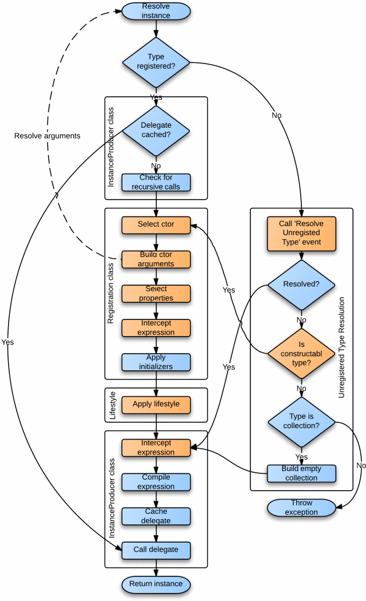

Simple Injector Pipeline¶
The pipeline is a series of steps that the Simple Injector container follows when registering and resolving each type. Simple Injector supports customizing certain steps in the pipeline to affect the default behavior. This document describes these steps and how the pipeline can be customized.
Registration Pipeline¶
The registration pipeline is the set of steps Simple Injector takes when making a registration in the container. This pipeline mainly consists of a set of validations that is performed. The process is rather straightforward and looks like this:

Steps:
- Container locked?: When the first type is resolved from the container, the container is locked for further changes. When a call to one of the registration methods is made after that, the container will throw an exception. The container can’t be unlocked. This behavior is fixed and can’t be changed. For a thorough explanation about this design, please read the design principles documentation. That documentation section also explains how to add new registrations after this point.
- Is ambiguous type?: When a type is registered that is considered to be ambiguous, the container will throw an exception. Types such as System.Type and System.String are considered ambiguous, since they have value type semantics and its unlikely that the configuration only contains a single definition of such type. For instance, when components take a string parameter in their constructor, it’s very unlikely that all components need that same value. Instead some components need a connection string, others a path to the file system, etc. To prevent this ambiguity in the configuration, Simple Injector blocks these registrations. This behavior is fixed and can’t be changed.
- Service type registered?: When a service type has already been registered, the container throws an exception. This prevents any accidental misconfigurations. This behavior can be overridden. See the How to override existing registrations for more information.
- Is constructable type?: When the registration is supplied with an implementation type that the container must create and auto-wire (using Register<TService, TImplementation>() for instance), the container checks if the implementation type is constructable. A type is considered to be constructable when it is a concrete type and has a single public constructor. An exception is thrown when these conditions are not met. This behavior can be overridden by implementing a custom IConstructorResolutionBehavior. Take for instance this example about T4MVC.
- All ctor params valid?: The constructor that has been selected in the previous step will be analyzed for invalid constructor parameters. Ambiguous types such as System.String and value types such as Int32 and Guid are not allowed. This behavior can be overridden by implementing a custom IConstructorVerificationBehavior. The IConstructorVerificationBehavior will typically have to be overridden in combination with the IConstructorInjectionBehavior, which is used during the Resolve Pipeline. Take a look at this blog post for an elaborate example.
- Add registration: When all previous validations succeeded, the registration is added to the container. Although the type may be registered successfully, this still doesn’t mean it can always be resolved. This depends on several other factors such as whether all dependencies can be resolved correctly. These checks cannot be performed during registration, and they are performed during the Resolve Pipeline.
Resolve Pipeline¶
The resolve pipeline is the set of steps Simple Injector takes when resolving an instance. Many steps in the pipeline can be replaced (orange in the diagram below) to change the default behavior of the container. The following diagram visualizes this pipeline:
Steps:
- Type registered?: If a type is requested that is not yet registered, the container falls back to unregistered type resolution.
- Delegate cached?: At the end of the pipeline, the compiled delegate is cached during the lifetime of the Container instance. Executing the pipeline steps is expensive and caching the delegate improves performance. This does mean though, that once compiled, the way a type is created, cannot be changed.
- Check for recursive calls: The container checks if a type indirectly depends on itself and throw a descriptive exception in this case. This prevents any hard to debug StackOverflowException that might otherwise occur.
- Select ctor: The container selects the single public constructor of the concrete type. This behavior can be overridden by implementing a custom IConstructorResolutionBehavior. Take for instance this example about T4MVC. When the registration is made using a Func<T> delegate, this and the following steps are skipped.
- Build ctor arguments: The container will call back into the container to resolve all constructor arguments. This results in a recursive call into the container with will trigger building a complete object graph. The container will throw an exception when one of the parameters cannot be resolved. This behavior can be overridden by implementing a custom IConstructorInjectionBehavior. The IConstructorInjectionBehavior will typically have to be overridden in combination with the IConstructorVerificationBehavior, which is used during the Register Pipeline. Take a look at this blog post for an elaborate example. The result of this step is an Expression that describes the invocation of the constructor with its arguments, i.e. “new MyService(new DbLogger(), new MyRepository(new DbFactory()))”.
- Select properties: The default behavior of the container is to not inject any properties and without any customization this step will be skipped. This behavior can be changed by implementing a custom IPropertySelectionBehavior. This custom behavior can decide how to handle each property (both public and non-public) of the given implementation. Note that read-only properties (without a setter) and static properties will be queried as well, although they can never be injected. It is the responsibility of the implementation to decide what to do with those properties. Note that the container will not silently skip any properties. If the custom property selection behavior returns true for a given property, the container throws an exception when the property cannot be injected. For instance, because the dependency can’t be resolved or when the application’s sandbox does not permit accessing internal types. When this step resulted in any properties being injected, it results in an Expression that describes the invocation of a delegate that injects the properties into the type that was created in the previous step, i.e. “injectProperties(new PropertyDependency1(), new PropertyDependency2(), new ServiceToInjectInto(new DbLogger())”. The ‘injectProperties’ in this case is a compiled delegate that takes in the created instance as last element and returns that same instance. The other arguments passed into this delegate are the properties that must be injected. Note that although this Expression calls a delegate, the delegate only sets the type’s properties based on method arguments. The Expression still contains all dependencies of the type (both constructor and property). It is important to note that the structure of this expression might change from version to version, but the fact that the expression holds all dependency information will not (and the service to inject the properties into will always be the last argument, since the framework has to ensure that the type’s dependencies are created first). By building this structure with all information available, we allow the following step to have complete control over the expression. Note that in case the registration is made using a Func<T> delegate, only the properties of the supplied TService will be queried and not the properties of the actually returned type (which might be a sub type of TService). For more information about changing the default behavior, see the Property Injection section on the Advanced Scenarios page.
- Intercept expression (1): By default the container skips this step. Users can hook a delegate onto the ExpressionBuilding event. This event allows molding and changing the expression built in the previous step. Please take a look at the Context Based Injection section in the Advanced scenarios wiki page for an example of what you can achieve by hooking onto this event. Note that there is a restriction to the changes you can make to the expression. Although the Expression can be changed completely, you have to make sure that any replaced expression returns the same implementation type (or a subtype).
- Apply initializers: Any applicable Action delegates that are registered using RegisterInitializer<T>(Action<T>), will be applied to the expression at this point. When one or more initializers are applied, it results in the creation of an Expression that wraps the original expression and invokes a delegate that calls the Action delegates, i.e. “applyInitializers(MyService())”.
- Apply lifestyle: Until this point in the pipeline, the expression that has been built describes the creation of a new instance (transient). This step applies caching to this instance. Lifestyles are applied by Lifestyle implementations. They use the expression that was built up using the previous steps and they are allowed to compile this expression to a delegate, before applying the caching. This means that the expressiveness about all the type’s dependencies can be embedded in the compiled delegate and is unavailable for analysis and interception when the next step is applied.
- Intercept expression (2): The container’s ExpressionBuilt event gets triggered after the lifestyle has been applied to an expression. The container’s RegisterDecorator extension methods internally make use of this event to decorate any type while preserving the lifestyle of that type. Multiple ExpressionBuilt events could handle the same type and they are all applied in the order in which they are registered.
- Compile expression: In this step, the expression that is the result of the previous step is compiled to a Func<object> delegate. This step cannot be customized.
- Cache delegate: The compiled delegate is stored for reuse. This step cannot be customized.
- Call delegate: The cached delegate is called to resolve an instance of the registered type. This step cannot be customized.
- Call ‘Resolve Unregistered Type’ event: When a type is requested that is not registered, the container will call the ResolveUnregisteredType event. Users can hook onto this event to make a last-minute registration in the container, even after the container has been locked down. The RegisterOpenGeneric extension methods make use of this event internally to allow mapping any given open generic abstraction to an open generic implementation. Another example is the Resolving Arrays and Lists section in the How to documentation page.
- Resolved?: When there was a registered ResolveUnregisteredType event that responded to the unregistered type, it is assumed that it has a lifestyle applied. It therefore makes a jump through the pipeline and continues right after the Apply lifestyle step. This allows any post lifestyle interception (such as decorators) to still be applied to types that are resolved using unregistered type resolution.
- Is constructable type?: When no ResolveUnregisteredType make the registration of the given type, the container will check if the type is constructable. This is done by querying the IConstructorResolutionBehavior and IConstructorVerificationBehavior implementations. By default, this means that the type should have a single public constructor and that the constructor arguments should not be ambiguous types (such as String or a value type). This behavior can be customized. If a type is constructable according to these rules ,the type is created by running it through the pipeline starting at Select ctor step with the transient lifetime. In other words, concrete types that are not registered explicitly, will get resolved with the transient lifestyle.
- Type is collection?: When the requested type is an IEnumerable<T> (or IReadOnlyCollection<T> or IReadOnlyList<T> in .NET 4.5), the container will build a empty list that will be used as singleton. This collection will be passed on to the Intercept expression step after Apply lifestyle to allow this empty list to still be intercepted and decorated. If the type is not an IEnumerable<T>, the type can’t be created by the container and an exception is thrown.